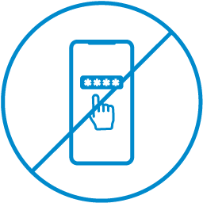
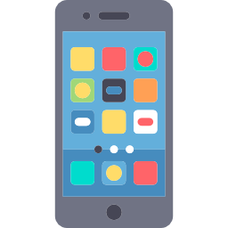
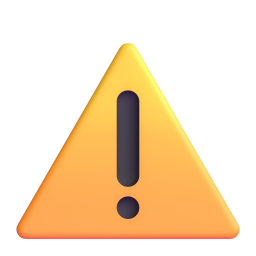

Smishing (Sms Phishing) 
 O que é Smishing?
O que é Smishing?
Smishing é uma técnica de fraude digital que utiliza mensagens de texto (SMS) para enganar usuários e obter informações pessoais ou financeiras. O termo é uma combinação de "SMS" e "phishing" (fraude digital). Os criminosos se passam por instituições confiáveis, como bancos ou órgãos governamentais, para induzir as vítimas a fornecer dados sensíveis .
 Como Funciona o Smishing?
O ataque de smishing geralmente começa com o envio de uma mensagem de texto que aparenta ser de uma fonte confiável. Essa mensagem pode conter um link malicioso que, ao ser clicado, direciona a vítima para um site falso ou solicita que forneça informações pessoais. Os criminosos podem usar táticas como criar um senso de urgência ou oferecer recompensas para aumentar as chances de sucesso do golpe .
 Riscos do Smishing